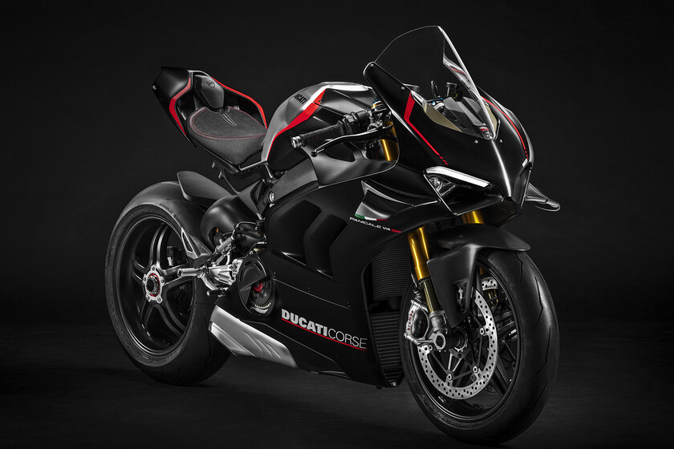

<section class="container">

    <section class="card card--gray"
        [ngClass]="{'card--red': backgroundColor === 'red', 'card--blue': backgroundColor === 'blue'}">
        <header class="card-header">
            <h2 class="card-header__title">Ducati Panigale V4S</h2>
        </header>
        <figure class="card-figure">
            
        </figure>
        <footer class="card--footer">
            <p class="card-footer__description">La Panigale V4 2023 representa el último paso en el camino
                característico de las motos deportivas Borgo
                Panigale y toma vida de la experiencia de muchos años de Ducati Corse unida al continuo intercambio de
                conocimientos y tecnología del mundo de las carreras directamente a las motos de producción.</p>
            <section class="card-footer__buttons">
                <button class="btn btn--black" (click)="changeBackground('red')">Red</button>
                <button class="btn btn--black" (click)="changeBackground('blue')">Blue</button>
            </section>
        </footer>
    </section>

</section>